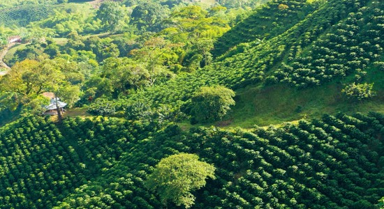
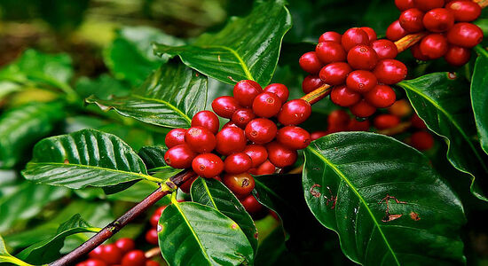
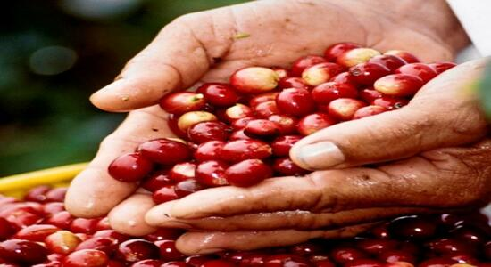

"La Primavera" farm, located in Rovira-Colombia, with an altitude of 1800 meters above sea and an average temperature of 26 degree centigrades, it is a perfect land for coffee plantations. Around 5 acres of coffee crops (Castilla specie) are cultivated in this farm.

With more than 40 years of dedication to plant and harvest coffee, Elizabeth is a good example of a hard-working woman that is in love with the Colombian coffe culture. She has always been supported by her husband and family.

Nowadays, Elizabeth has started to produce roast and ground coffee as a way to add value to the commodity and fight against the financial dificulties that the coffee-farmers are facing.